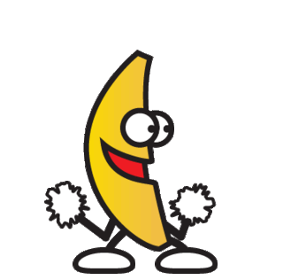

No, really. Consider the User

<table summary="this is a layout table">
<img src=spacer.gif alt="spacer">
<a href="contact.html"
title="click here to contact us">
contact us</a>
5.5 Provide summaries for tables. [Priority 3] For example, in HTML, use the "summary" attribute of the TABLE element.Guideline 5. Create tables that transform gracefully.
1.1 Provide a text equivalent for every non-text element (e.g., via "alt", "longdesc", or in element content). [Priority 1]Guideline 1. Provide equivalent alternatives to auditory and visual content.
1.1 Provide a text equivalent for every non-text element (e.g., via "alt", "longdesc", or in element content). [Priority 1]Guideline 1. Provide equivalent alternatives to auditory and visual content.
13.1 Clearly identify the target of each link. [Priority 2] … In addition to clear link text, content developers may further clarify the target of a link with an informative link title (e.g., in HTML, the "title" attribute)Guideline 13. Provide clear navigation mechanisms.
WAI-ARIA provides a framework for adding attributes to identify features for user interaction, how they relate to each other, and their current state. WAI-ARIA describes new navigation techniques to mark regions and common Web structures as menus, primary content, secondary content, banner information, and other types of Web structures.W3C
So they either
Design features to be accessible to users with disabilities. Access by everyone regardless of ability is essential. This does not mean that features should be omitted entirely if not all users can make full use of them, but alternate mechanisms should be provided.HTML Design Principles: Accessibility
The vast majority don’t use any of the semantic elements unless it’s by accident like a thoughtless copy-paste …Unless there is an immediate visual or behavioural benefit to using an element, most people will ignore itHTML is too complex
<dialog>
<p>ActiveX Pistols</p>
<button id="close">Close</button>
</dialog>
<button id="show">Open Dialog!</button>var dialog = document.querySelector('dialog');
document.querySelector('#show').onclick
= function() {dialog.showModal();
};
document.querySelector('#close').onclick
= function() {dialog.close();
};For the first time in 5 years of surveys, respondents are more positive about web accessibility progress than in the previous survey. Only 21.8% thought web content has become less accessible, compared to 25.2% in May 2012.Screen Reader User Survey #5 Results: Web Accessibility Progress
Web Components enable Web application authors to define widgets with a level of visual richness and interactivity not possible with CSS alone, and ease of composition and reuse not possible with script libraries today.Introduction to Web Components
var p = Object.create(HTMLButtonElement.prototype);
var FancyButton = document.registerElement
('fancy-button',
{extends: 'button', prototype: p});
…
<button is="fancy-button">
<DIV id=:rk class="J-K-I J-J5-Ji L3 J-K-I-JO" tabIndex=0
unselectable="on" closure_hashCode_l16mgm="182" act="">
<DIV class="J-J5-Ji J-K-I-Kv-H" unselectable="on">
<DIV class="J-J5-Ji J-K-I-J6-H" unselectable="on">
<DIV class=J-K-I-KC unselectable="on">
<DIV class=J-K-I-K9-KP unselectable="on"> </DIV>
<DIV class=J-K-I-Jz unselectable="on">Search Mail</DIV>
</DIV></DIV></DIV></DIV>When there isn't a HTML element that is semantically close to their custom element, authors can omit the
extends attribute … these kinds of elements are called custom tags. A user agent that does not support
custom elements will treat this as the semantically undifferentiated HTMLUnknownElement.
Introduction to Web Components
You can totally make these things accessible. This changes nothing from the accessibility perspective.
Web Components are the new jQuery plugins
90% ofscience fictionjQuery pluginsWeb Components are shit.-- Theodore Sturgeon
Something Karl Groves said: I'm writing a new talk titled "Demystifying Web Components Accessibility". It has one slide. It says "Same as regular ole web accessibility. Seriously. Stop overthinking it"

Custom elements can be loaded from external files using the link tag:
<link rel="import" href="goodies.html">"This is the kind of passion I want to see from accessibility advocates, these are the voices we need. Not another library to add ARIA to badly thought-out HTML".The passion accessibility presentations need